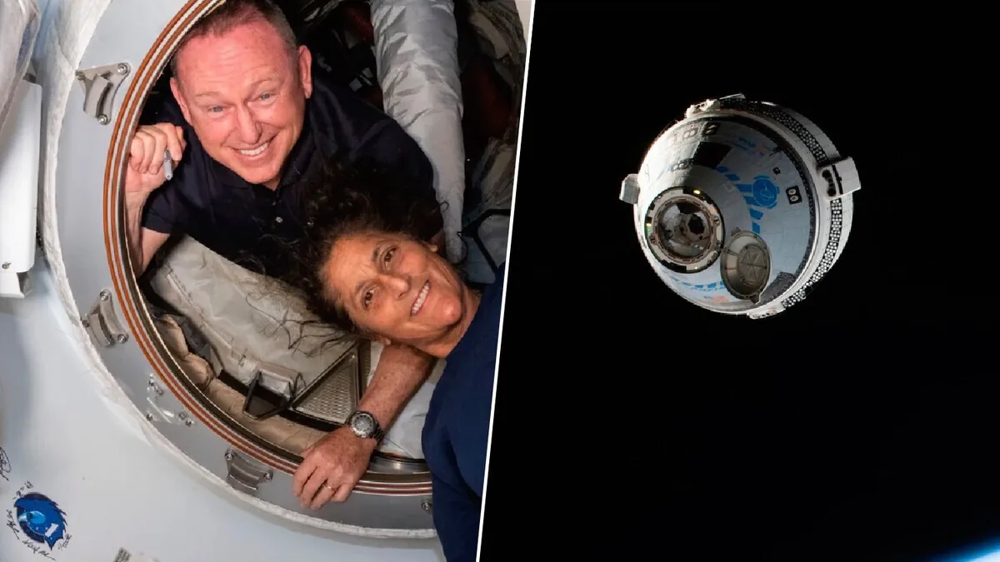

Astronomia🌌
Astronauta da NASA Relata "Ruídos Estranhos" em Cápsula Espacial
Em um incidente incomum que capturou a atenção global, o astronauta da NASA Butch Wilmore relatou ouvir "ruídos estranhos" enquanto estava confinado em uma cápsula no espaço. O astronauta, que está programado para permanecer na Estação Espacial Internacional (ISS) até novembro devido a um erro na cápsula que o transportou, comunicou-se com o controle da missão sobre o incidente perturbador.
Os técnicos da NASA em Houston foram prontamente notificados sobre os ruídos misteriosos emitidos pela caixa de som da espaçonave Starliner. Wilmore descreveu os sons como um "ruído pulsante", comparável ao de um sonar, o que levou a uma investigação imediata por parte da equipe de controle da missão.
A situação ganhou uma camada adicional de complexidade quando foi revelado que Wilmore e sua colega astronauta Suni Williams teriam que adiar seu retorno à Terra. Originalmente, a missão deveria durar cerca de oito dias, mas devido a problemas significativos no acoplamento da cápsula Starliner à ISS, a nave será enviada de volta sem tripulação.
A decisão de adiar o retorno foi tomada após uma avaliação conjunta entre especialistas da NASA e da Boeing, que identificaram riscos consideráveis para a tripulação devido a problemas no módulo de serviço da Starliner. Este módulo é crucial para a orientação da nave ao se desacoplar da estação e para a preparação da reentrada na atmosfera terrestre.
Os problemas enfrentados incluem a falha de vários propulsores do sistema de controle de reação, essenciais para a navegação da cápsula. Testes subsequentes em White Sands, Novo México, e avaliações do desempenho dos propulsores enquanto a nave estava acoplada à ISS, foram realizados para entender melhor a situação.
Apesar dos desafios técnicos, Wilmore e Williams expressaram confiança em um retorno seguro à Terra. A NASA permanece otimista, especialmente após a extensão da vida útil das baterias da Starliner por mais 90 dias, o que proporciona tempo adicional para resolver os problemas antes do retorno dos astronautas.
Este incidente mostra os desafios inerentes à exploração espacial e a importância de manter a segurança da tripulação como prioridade máxima. Enquanto a investigação sobre os "ruídos estranhos" continua, a comunidade científica e o público aguardam ansiosamente por atualizações e pelo retorno seguro dos astronautas à Terra.
Ciência🧪
Cientistas descobrem mais de 1,7 mil vírus em geleira milenar no Tibete
Cientistas descobriram mais de 1,7 mil vírus nas profundezas da Geleira Guliya, localizada no Planalto Tibetano, na China. A pesquisa, publicada na revista Nature Geoscience em 26 de agosto, revelou que muitos desses micróbios são inéditos para a ciência. Embora esses vírus não representem uma ameaça direta à saúde humana, especialistas alertam que o derretimento das geleiras, impulsionado pelo aquecimento global, pode liberar patógenos desconhecidos que poderiam afetar a saúde pública.
Os vírus foram encontrados em um núcleo de gelo de 300 metros de comprimento, com uma idade estimada de 41 mil anos, sobrevivendo a três grandes mudanças climáticas. Esses micróbios têm a capacidade de infectar apenas arqueas e bactérias, não apresentando risco para humanos, animais ou plantas.
No entanto, a preocupação com a liberação de novos patógenos não é infundada. Casos anteriores, como o surto de antraz em 2016 na Sibéria, onde esporos de uma carcaça congelada causaram hospitalizações e uma morte, ilustram os riscos associados ao descongelamento de áreas antes preservadas.
A discussão sobre a segurança da água derretida de geleiras ganhou destaque nas redes sociais após um vídeo do rapper Chris “Ludacris” Bridges, que foi visto bebendo essa água no Alasca, gerando questionamentos sobre os riscos envolvidos.
Essa descoberta tem uma grande importância em monitorar as consequências das mudanças climáticas e os potenciais riscos à saúde que podem surgir com o descongelamento de regiões antes inexploradas.
Educação📚
MEC e Undime realizam encontro sobre busca ativa na educação de jovens e adultos
O Ministério da Educação (MEC) e a União Nacional dos Dirigentes Municipais de Educação (Undime) realizarão um encontro no dia 3 de setembro para compartilhar e debater experiências de busca ativa com o objetivo de aumentar as matrículas na educação de jovens e adultos (EJA). As ações têm contribuído para a ampliação das matrículas da EJA e serão partilhadas no evento como exemplos de boas práticas que podem inspirar outras redes de ensino.
Até o dia 6 de setembro, o MEC promoverá uma chamada pública para a EJA, uma das estratégias previstas no Pacto Nacional pela Superação do Analfabetismo e Qualificação na Educação de Jovens e Adultos. O objetivo é estimular a volta aos estudos dessa parcela da população que precisou abandoná-los ou que não frequentou a escola.
As ações de busca ativa realizadas por redes municipais e estaduais de ensino, escolas públicas e institutos federais têm sido fundamentais para ampliar o acesso à EJA. Compartilhar essas experiências bem-sucedidas durante o encontro pode inspirar outras instituições a adotar estratégias semelhantes, contribuindo para a redução do analfabetismo e a melhoria da qualificação profissional de jovens e adultos em todo o país.
O encontro acontecerá de forma remota, das 15h às 17h, no canal do MEC no YouTube e no Conviva Educação. Para participar, os interessados devem fazer sua inscrição na plataforma da Undime
Economia💰
Dólar e Ibovespa oscilam em meio a novas projeções econômicas
O dólar apresentou volatilidade nesta segunda-feira (2), primeiro dia de negociações de setembro, alternando entre altas e baixas. O mercado financeiro opera com volumes reduzidos devido ao feriado do Dia do Trabalho nos Estados Unidos, que mantém as bolsas americanas fechadas. No Brasil, os investidores estão atentos à divulgação do Boletim Focus, que reúne as projeções de economistas sobre os principais indicadores econômicos do país.
Nesta edição do boletim, as expectativas para a inflação, medida pelo Índice de Preços ao Consumidor Amplo (IPCA), aumentaram pela sétima semana consecutiva, passando de 4,25% para 4,26% para 2024. Essa elevação coloca a inflação brasileira cada vez mais distante da meta estabelecida pelo Banco Central, que é de 3%. Além disso, as projeções para o crescimento do Produto Interno Bruto (PIB) também foram ajustadas para cima, de 2,43% para 2,46%.
No mercado de câmbio, o dólar estava cotado a R$ 5,6208, apresentando uma leve queda de 0,21% em relação ao fechamento anterior. Na última sexta-feira, a moeda americana havia registrado uma alta de 0,17%. O Ibovespa, principal índice da bolsa brasileira, fechou em baixa de 0,03% na última sessão, mas acumulou uma alta de 0,29% na semana.
Os investidores também estão monitorando a situação econômica da China, que enfrenta uma desaceleração nas exportações e desafios no setor imobiliário. As autoridades chinesas estão considerando um plano de refinanciamento de hipotecas de até US$ 5,4 bilhões para estimular o consumo e o mercado imobiliário.
Esses fatores, somados ao cenário de incerteza global, indicam que o mercado permanecerá volátil nos próximos dias, com os analistas atentos a novas informações que possam impactar a economia brasileira e as expectativas futuras.
Meio Ambiente🌲
Setembro começa com onda de calor, mas frente fria é esperada no final do mês

Setembro inicia com uma nova onda de calor que deve elevar as temperaturas em grande parte do Centro-Sul do Brasil, com registros superiores a 40°C em áreas do Centro-Oeste, incluindo estados como Mato Grosso, Rondônia e Goiás. A previsão é de que essa onda de calor se estenda por até dez dias, trazendo um clima seco e aumentando a umidade do ar em níveis críticos, abaixo de 12% em várias regiões, o que pode prejudicar a qualidade do ar e favorecer queimadas.
Conforme a Climatempo, o fenômeno é caracterizado por temperaturas que ficam pelo menos 5°C acima da média por um período prolongado, e é comum nesta época do ano devido à transição do inverno para a primavera, quando a radiação solar aumenta. No entanto, as ondas de calor têm se tornado mais intensas e frequentes, um reflexo das mudanças climáticas.
Apesar do calor predominante, uma forte frente fria é esperada para o dia 19 de setembro, que deve trazer alívio às temperaturas em algumas regiões. A previsão indica que, após um início de mês quente, as chuvas devem ser abaixo da média na maior parte do país, com exceção de algumas áreas do Norte e do Sul, onde as precipitações podem ser superiores.
Os meteorologistas também alertam para a possibilidade de geadas em locais de maior altitude, devido à entrada de massas de ar frio. A combinação de temperaturas elevadas e umidade baixa pode resultar em um aumento significativo no número de queimadas, que já estão em níveis elevados em todo o Brasil.
Esses padrões climáticos reforçam a necessidade de monitoramento contínuo e ações para mitigar os impactos das ondas de calor e das mudanças climáticas em curso.